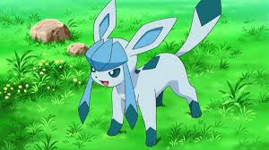
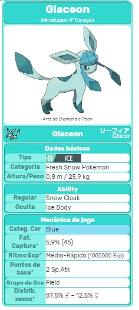

Glaceon, o gélido
Glaceon (Japonês: リーフィア Glacia) é uma espécie de Pokémon do tipo Gelo, introduzida na 4ª Geração e classificada oficialmente como Fresh Snow Pokémon. É uma das oito formas evoluídas e finais de Eevee.
Glaceon é uma raposa de pele azul claro, que pode ser congelado em espinhos afiados. Ele parece estar usando um gorro na cabeça. As orelhas de Glaceon internas, duas manchas nas costas, traseiro e tampa finais são todos azul em forma de losango e mais escuro, em contraste com o ciano cor principal do corpo. Glaceon também tem uma forma similar sobre as suas costas. Os pés de Glaceon também são uma cor azul escuro, dando-lhe a impressão de usar botas
Diferenças de Genero
Não ha diferenças de genero no Glaceon
Habilidades Especiais
Glaceon pode usar qualquer ataque que Eevee sabe, com a adição dos movimentos do tipo normal. Como um Pokémon totalmente evoluído, Glaceon pode aprender o Hyper Beam e Giga Impact. Além disso, ele também pode congelar sua pele para torná-la levantar-se como agulhas - semelhante ao seu parente evolutivo, Jolteon. Ao controlar o seu calor do corpo, ela também pode congelar a atmosfera em torno dele para fazer uma enxurrada de diamante de poeira.
Pokédex
Glaceon, o Fresh Snow Pokémon. É a forma evoluída de Eevee. Glaceon pode congelar a pele sobre seu corpo e deixá-la dura como agulhas afiadas.
